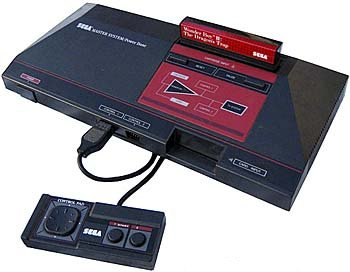

Sega Master System (SMS), 1986
CPU:
Zilog Z80, de 8 bits
Frequência: 3,54 MHz
RAM: 8 KB onboard + extensão no cartucho
Video: Texas VDP (Video Display Processor)
VRAM: 16 KB
Grande sucesso no Brasil
Unidades vendidas: 13 milhões (mundo inteiro)